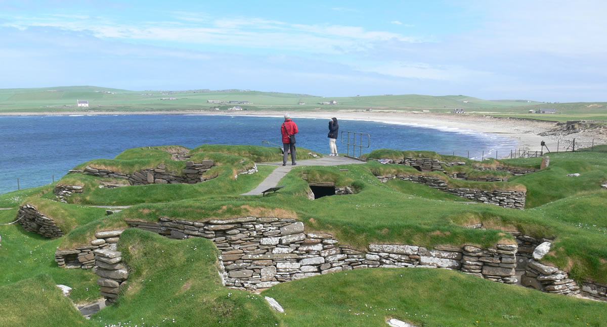

Skaros | Lino Namai
Pereiti prie turinio paskyra LININIAI DRABUŽIAI LINAS VAIKAMS STALO GAMINIAI VIRTUVĖS GAMINIAI LININĖ PATALYNĖ VONIAI IR PIRČIAI LININIAI AUDINIAI LININIAI VERPALAI LININIAI NĖRINIAI Menu LININIAI DRABUŽIAI LINAS VAIKAMS STALO GAMINIAI VIRTUVĖS GAMINIAI LININĖ PATALYNĖ VONIAI IR PIRČIAI LININIAI AUDINIAI LININIAI VERPALAI LININIAI NĖRINIAI Krepšelis / 0.00 € 0 Pagrindinis meniu LININIAI DRABUŽIAI LINAS VAIKAMS STALO GAMINIAI VIRTUVĖS GAMINIAI LININĖ PATALYNĖ VONIAI IR PIRČIAI LININIAI AUDINIAI LININIAI VERPALAI LININIAI NĖRINIAI Krepšelis / 0.00 € 0 Švarkai / Skraistės / Paltukai Suknelės Palaidinės Sijonai Moteriškos kelnės Vyriški marškiniai Šalikai Skaros Rankinės Pradžia / LININIAI DRABUŽIAI / Skaros
Skaros
Filtras
Lininė skara gėlėta smėlinės spalvos
27.40 €Lininė skara mėlyna gėlėta
27.40 €Lininė skara juodai-baltai languota
27.70 €Lininė skara žydra raštuota
27.60 €Lininė geltona skara
23.40 €Lininė ryškiai rožinė skara
23.40 €Lininė tamsiai mėlyna raštuota skara
25.20 €Puslininė tamsiai raudona raštuota skara
19.90 €Lininė juoda raštuota skara
27.60 €Lininė skara mėlyna languota
25.50 €Raštuota mėlyna lininė skara
27.60 €Šviesiai žalia lininė skara
22.15 €Spalvota languota lininė skara
27.60 €Baklažano spalvos raštuota lininė skara
27.60 €Violetinė lininė skara
22.15 €Rusva languota lininė skara
28.90 €Lino Namai / AB Siūlas
+370 450 31389 info@linonamai.lt Biržai, Astravo g. 17 LT - 41190Susipažinkime
Apie mus Kontaktai Mūsų parduotuvės Taisyklės Privatumo politika Saugumaspagalba
Pristatymas ir kainos Prekių grąžinimas Apmokėjimasinfo
Naujienos Lino priežiūra Facebook-f© Visos teisės į pateiktą informaciją šioje svetainėje priklauso AB "Siūlas"
show blocks helperPlotis
Filtruoti Informuojame, kad šioje svetainėje yra naudojami slapukai (angl. cookies). Toliau naršydami svetainėje arba paspausdami mygtuką Sutinku Jūs sutinkate su slapukų naudojimu.Savo duotą sutikimą bet kada galėsite atšaukti pakeisdami savo interneto naršyklės nustatymus ir ištrindami įrašytus slapukus. Sutinku Nesutinku Privatumo Politika Privatumo Politika Close
Privacy Overview
This website uses cookies to improve your experience while you navigate through the website. Out of these, the cookies that are categorized as necessary are stored on your browser as they are essential for the working of basic functionalities of the website. We also use third-party cookies that help us analyze and understand how you use this website. These cookies will be stored in your browser only with your consent. You also have the option to opt-out of these cookies. But opting out of some of these cookies may affect your browsing experience. Necessary Necessary Always EnabledNecessary cookies are absolutely essential for the website to function properly. This category only includes cookies that ensures basic functionalities and security features of the website. These cookies do not store any personal information.
Non-necessary Non-necessaryAny cookies that may not be particularly necessary for the website to function and is used specifically to collect user personal data via analytics, ads, other embedded contents are termed as non-necessary cookies. It is mandatory to procure user consent prior to running these cookies on your website.
Scroll to Top